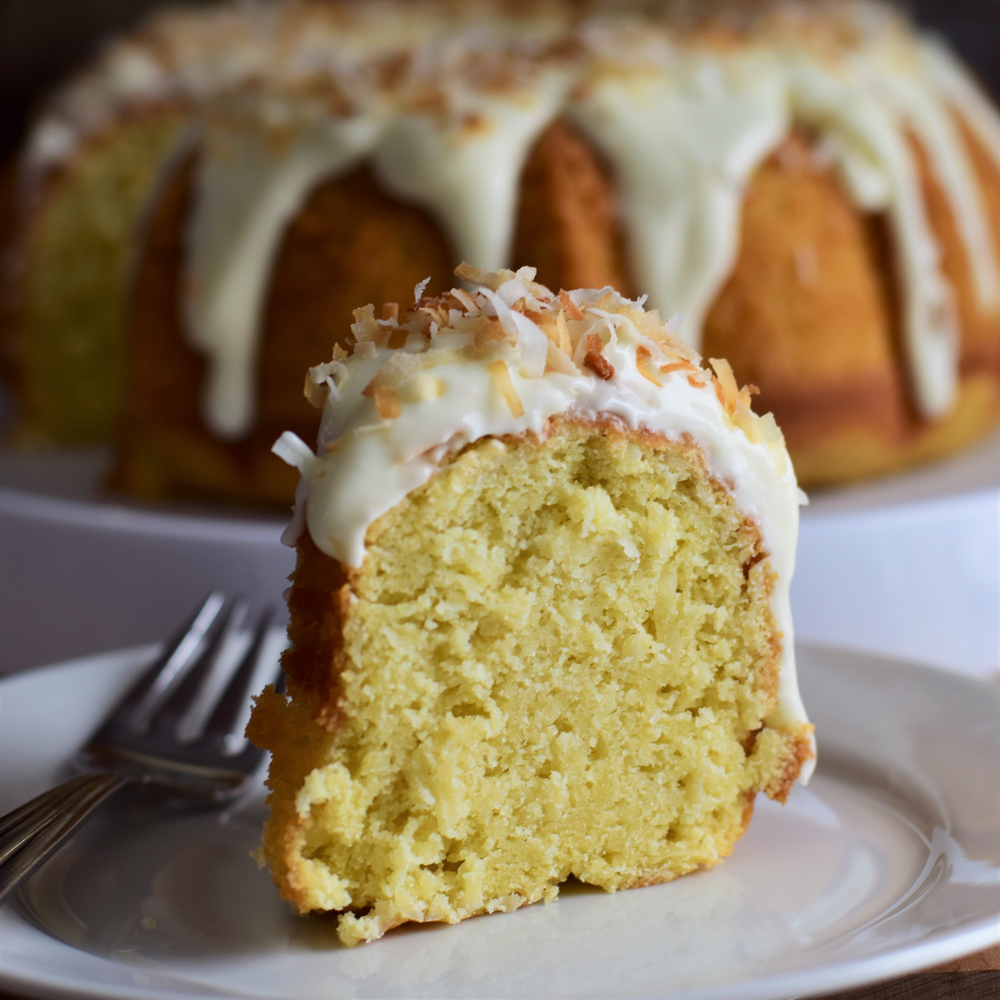

Home
Coconut Milk Cake Recipe

Discription
This is a super moist and tasty coconut cake. Growing up in Brazil, this was a favorite amongst our circle of friends. It is especially good with a cup of coffee on the side. I've converted a few of my anti-coconut family and friends into lovers of this cake.
Ingredients
- 2 cups white sugar
- 1 cup butter, softened
- 4 eggs, separated
- 1 cup unsweetened shredded coconut
- 2 cups all-purpose flour
- 2 tablespoons baking powder
- 1 teaspoon salt
- 1 (14 ounce) can coconut milk
Steps
- Preheat oven to 350 degrees F (175 degrees C). Grease a 9x13-inch cake pan.
- Beat sugar, butter, and egg yolks together in a bowl using an electric mixer until smooth and creamy; add shredded coconut.
- Whisk flour, baking powder, and salt together in a bowl. Stir creamed butter mixture, alternating with coconut milk, into flour mixture until batter is just mixed.
- Beat egg whites in a glass or metal bowl until until soft peaks form. Lift your beater or whisk straight up: the egg whites will form soft mounds rather than a sharp peak. Fold egg whites into batter. Pour batter into the prepared cake pan.
- Bake in the preheated oven until a toothpick inserted in the center of the cake comes out clean, about 45 minutes.